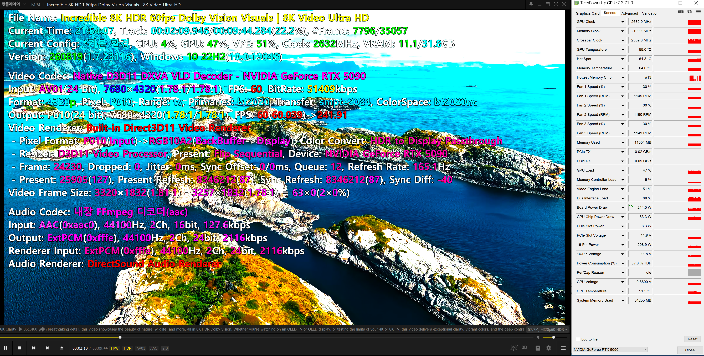

RIFE for PotPlayer
사용 설명서
원본 해상도를 유지하는 RIFE 보간. 연결부터 진단까지, 필요한 순서대로 안내합니다.
v0.3.0 · 2026-10-17 · 인터넷 없이 읽을 수 있는 HTML 매뉴얼
RTX 50 시리즈 전용 · RTX 5090 검증 / RTX 5080 사용자 정상 구동 확인
처음 연결하기
압축을 풀고 RifeControl.exe를 실행하세요. .NET·Python·VapourSynth를 따로 설치할 필요가 없습니다. 팟플레이어와 NVIDIA 그래픽 드라이버는 별도로 필요합니다.
- 폴더 전체를 압축 해제합니다. 쓰기 가능한 고정 폴더에 두세요. EXE 파일만 따로 옮기지 마세요.
- 연결 설정 → 엔진 검사 / 준비를 누릅니다. 호환되는 엔진은 재사용하고, 호환되지 않으면 팟플레이어를 종료한 상태에서 이 PC용 엔진을 한 번 준비합니다.
- 필터 등록을 누릅니다. 팟플레이어가 관리자 권한으로 실행되면 관리자용 필터 등록이 표시되고 Windows 승인이 필요합니다.
- 팟플레이어의 F5 → 코덱/필터 → 전역 필터 우선 순위 → 시스템 코덱 추가에서 RIFE for PotPlayer를 선택하고 최우선 사용으로 설정합니다. 다른 보간 필터는 동시에 활성화하지 마세요.
- 영상을 다시 열고 RIFE 창 상단의 프레임 보간 동작 중과 입력 → 출력 FPS를 확인합니다.
필터 등록과 팟플레이어 필터 선택은 별개입니다. 등록만 끝내면 팟플레이어가 RIFE를 자동으로 사용하는 것은 아닙니다.

실행 환경과 엔진
Windows x64용 정식 릴리스입니다. 지원 GPU는 NVIDIA GeForce RTX 50 시리즈뿐입니다. RTX 5090은 검증 완료, RTX 5080은 사용자 정상 구동 확인 상태입니다. RTX 30 시리즈는 사용자 테스트에서 동작하지 않아 지원하지 않으며, 그 외 GPU 시리즈도 지원 대상이 아닙니다. PotPlayer64.exe와 PotPlayerMini64.exe를 지원합니다. 주 검증 환경은 Windows 10 22H2, RTX 5090, NVIDIA 드라이버 617.42입니다.
| 항목 | 내용 |
|---|---|
| 동봉 구성 | RIFE 4.25 Standard 모델, TensorRT 10.16.0.72 / CUDA 13 계열 런타임, .NET/WPF 실행환경, 엔진 준비 도구 |
| 엔진 재사용 | 최대 긴 변 960의 고정 가이드 입력을 사용해 파일마다 엔진을 다시 만들지 않습니다. |
| 다른 PC·GPU | 지원 대상인 RTX 50 시리즈에서 먼저 엔진 검사를 실행하세요. GPU·런타임이 달라지면 재준비가 필요할 수 있습니다. SM120 / PTX 빌더 리소스가 포함되어 있습니다. RTX 30 등 다른 시리즈는 엔진 재준비로 지원되는 대상이 아닙니다. |
| GPU 메모리 | 원본 해상도, 보간 배수, 렌더러, VSR 사용 여부에 따라 달라집니다. |
| 배포 형태 | 설치 프로그램 없이 폴더에서 실행하는 독립 실행 ZIP입니다. DirectShow 사용을 위한 필터 등록은 필요합니다. |
엔진 준비는 수 분 이상 걸릴 수 있습니다. 파일을 열거나 탐색하는 도중에는 TensorRT 엔진을 컴파일하지 않습니다. 초기 CUDA 실행 명령 준비는 엔진 재컴파일과 다릅니다. 실행 파일·런타임·모델을 같은 배포본으로 유지하세요.
보간 설정
상단 스위치로 보간을 켜고 끕니다. 설정 변경 후에는 영상을 다시 열어 적용하세요. 배포본의 기본 출력 상한은 60fps입니다.
| 설정 | 동작 |
|---|---|
| 보간할 원본 FPS | 24·25·30·50·60·기타를 여러 개 선택합니다. 23.976은 24, 29.97은 30, 59.94는 60에 포함됩니다. |
| 세로 해상도 | 전체, 1080p 이하, 1440p 이하에서 보간할 입력을 고릅니다. |
| FPS 상한 | 60·72·75·100·120·144·160·240fps 중 상한을 선택하고, 그 안의 가장 큰 정수배를 적용합니다. 예: 상한 120에서 24→120, 25→100, 23.976→119.88fps. v0.2.1에서 160fps를 추가했습니다. |
| 원본 배수 | 정해진 배수로 출력합니다. 예: 60fps ×4 → 240fps. GPU 부하도 함께 증가합니다. |
| 해상도별 설정 | 설정창에서 해상도별 출력 규칙을 선택한 경우 공통 설정보다 해당 규칙이 우선합니다. |

160fps 상한 사용
공통 출력 설정과 해상도별 규칙에서 160fps를 선택할 수 있습니다. 24fps는 144fps(×6), 25·30fps는 150fps, 60fps는 120fps(×2), 80fps는 160fps(×2)로 출력합니다. 23.976fps는 약 143.856fps입니다. 이는 정수배 출력의 상한이며 모니터 주사율을 160Hz로 바꾸거나 모든 영상을 160fps로 만드는 설정은 아닙니다.
재생 시작과 탐색
처음에는 약 100ms 분량의 원본 영상을 먼저 보내고 별도 경로의 음성 재생을 이어가면서 보간을 준비합니다. 원본 구간은 프레임 경계에 맞추므로 23.976fps의 세 장은 약 125ms입니다. 기본 보간 경로의 GPU 준비 완료를 확인한 뒤 보간을 시작합니다. 추가 최적화 준비가 늦어져도 기존 방식으로 보간을 먼저 시작합니다.
완료한 출력은 렌더러 큐로 전달하고 기존 표시 시각(PTS)을 따릅니다. 모든 출력을 멈춰 놓고 추가로 100ms를 쉬거나 음성을 RIFE에 쌓는 방식이 아닙니다. 탐색 후 원본 표시 기준은 50ms이며, 실제 보간 재개는 새 원본 쌍 확보와 GPU 준비 상태에도 영향을 받습니다. 8K 60p ×4의 냉간 시작 드롭은 장기 개선 과제로 남습니다.
v0.3.0 성능 개선
- 반복 연산 감소: 여러 중간 프레임을 만들 때 공통 계산을 재사용합니다. 모든 해상도에 적용하며, 중간 프레임 한 장은 기존 방식을 유지합니다.
- 4K 이상 합성 효율 개선: 원본의 긴 변이 3840픽셀 이상일 때 자동 적용합니다. 3840×1604 영화도 포함하며 영상 전환 시 다시 판단합니다.
- 시작·탐색 응답 개선: 원본과 음성 재생을 먼저 진행하면서 보간을 준비합니다.
모델·정밀도·원본 해상도 합성과 기존 설정은 유지합니다. 업데이트 후 엔진 검사 / 준비를 한 번 실행하세요. 필요한 추가 엔진을 확인·준비하며, 준비되지 않은 경우 기존 방식으로 보간합니다.
보간 방식과 영상 호환성
RIFE가 최대 긴 변 960에서 움직임과 혼합 마스크를 구하고, 이 결과로 원본 해상도의 픽셀을 합성합니다. 960 크기의 완성 영상을 확대하는 방식이 아닙니다. 추론은 TensorRT FP16을 사용하며 좌표와 일부 연산·입출력은 FP32입니다.
장면 전환에서는 서로 다른 장면을 억지로 섞지 않도록 원본을 유지합니다. 빠른 움직임과 조명 변화의 오검출을 줄인 장면 감지를 사용하지만 모든 영상에서 완벽한 컷 감지를 보장하지는 않습니다.
| 입력·경로 | 지원 범위와 주의점 |
|---|---|
| 8bit SDR | NV12 경로를 검증했습니다. D3D11 디코더와 D3D11 렌더러 구성을 권장합니다. |
| 10bit SDR / HDR | P010 원본 코드 값으로 합성합니다. HDR10·HLG 색 정보와 정적 메타데이터 전달 경로를 검증했습니다. 필터에서 톤 매핑하지 않습니다. |
| HW ↔ SW 전환 | 하드웨어 입력, 소프트웨어 입력 및 재연결 시 형식·HDR 정보 유지 검사를 수행했습니다. 실제 디코더와 렌더러 조합에 따라 연결 가능 여부가 달라집니다. |
| 인터레이스 / 4:2:2 | 소프트웨어 입력의 인터레이스 처리와 P210/Y210 변환 경로를 검증했습니다. 모든 코덱 조합의 재생을 의미하지는 않습니다. |
| Dolby Vision | 디코더가 제공한 메타데이터 전달을 검증한 범위입니다. 모든 프로파일, FEL 처리, 실제 Dolby Vision 디스플레이 출력을 보증하지 않습니다. |
| 제한 | HDR10+ 동적 메타데이터 전달은 미구현입니다. 풀레인지·BT.601 등 일부 입력 색 형식은 현재 경로에서 거절될 수 있습니다. |
가로·세로·정사각형 영상은 같은 엔진을 재사용합니다. 세로 영상은 가이드에서만 회전하고, 작은 입력은 가이드 크기까지 강제로 확대하지 않습니다.
HEVC·AV1과 10비트 출력
v0.2.1은 일부 프로그레시브 HEVC 영상이 디코더에서 인터레이스로 잘못 표시되어 23.976fps가 47.952fps로 인식되던 문제를 수정합니다. HEVC 헤더에서 프로그레시브 전용 영상임이 확인될 때만 바로잡습니다. 실제 인터레이스와 혼합·불명확한 입력은 기존 처리 경로를 유지합니다.
문제가 확인된 옵션은 팟플레이어 F5 → 영상 → 비디오 버퍼 포맷 옆 ‘10비트 출력’ 체크박스입니다. 내장 Direct3D 11 Video Renderer에서 해당 옵션을 켜고 내장 FFmpeg 소프트웨어 디코딩을 사용한 구성에서도 FPS 오인식이 재현되었습니다. 수정본은 이 옵션을 끄도록 요구하지 않으며, 기존 설정을 유지한 채 영상을 다시 열어 확인하세요.
10비트 출력은 HDR 전환 스위치가 아닙니다. 일반 8비트 영상에서도 사용할 수 있지만, 원본에 없던 색 정보를 복원하지는 않습니다. 10비트 원본을 사용한다면 진단의 P010 입력·출력과 정상 재생 여부를 함께 확인하세요. 최종 디스플레이 출력은 렌더러·Windows·드라이버·모니터 구성에도 달려 있습니다.
상한 120에서 문제가 있던 23.976fps 영상은 23.976 → 119.88fps가 정상입니다. 이전 오류 상태의 95.904fps보다 출력량이 25% 늘므로 GPU 사용량도 증가할 수 있습니다. 모델·화질 설정을 낮춘 수정이 아닙니다.
실제 HEVC·H.264 인터레이스 영상에서 추출한 프레임으로 수정 전후 필드 처리·출력 픽셀·시간표가 같음을 확인했습니다. 기존 보간 출력 800개와 연속 출력 1,196개, 장면 전환 검사 12개도 일치했습니다. 이 검증은 필터 비교이며 모든 디코더·렌더러 조합의 화면 출력 성능을 보증하지는 않습니다.
AV1 하드웨어 디코딩과 10비트 출력
v0.3.0은 AV1의 P010 10비트 경로가 잘못 인터레이스로 광고되어 하드웨어 디코딩·보간 연결이 실패하거나 입력 FPS가 두 배로 인식되던 경우를 수정합니다. AV1 코덱과 시퀀스 정보를 확인하는 협상 단계의 보정이며, 모든 코덱의 인터레이스 플래그를 무조건 지우지 않습니다. HEVC의 실제 인터레이스 처리와 기존 화질 경로는 유지합니다.
확인한 8K AV1 HDR 영상은 10비트 출력이 켜진 D3D11 하드웨어 디코딩과 P010 보간으로 재생됐습니다. 모니터가 HDR 모드라도 SDR 영상이 HDR 영상으로 바뀌는 것은 아닙니다. RIFE를 제외해도 과도하게 밝으면 플레이어·렌더러·Windows의 색 처리 상태를 따로 확인하세요.
진단과 문제 확인
진단 탭에서 연결된 플레이어, 등록 위치, 영상 전달 경로, 픽셀 형식, HDR 정보와 측정 상태를 확인합니다. 재생 중 수치가 갱신되어도 읽던 스크롤 위치와 선택 영역을 유지합니다. 숨겨진 진단 탭은 다시 표시한 뒤 다음 갱신에서 최신 내용을 반영합니다.

정보 복사로 진단 텍스트를 복사하고 진단 폴더 열기로 기록을 확인합니다. 기록 위치는 %LOCALAPPDATA%\RifeStandardPotPlayer입니다. playback.log에는 시작·탐색·전환과 오류 단계가 기록되고, 마지막 오류는 playback.last-error.log에 따로 남습니다. performance.log는 표본 성능 기록입니다. 배포본은 상세 진단을 켜고 32쌍마다 표본을 측정합니다.
TensorRT 추론, D3D11↔CUDA 공유·대기, 원본 합성 시간이 별도로 기록됩니다. CPU·GPU 작업은 겹치므로 시간을 단순 합산하면 안 됩니다. 기록 저장은 별도 스레드에서 하며 재생을 기다리게 하지 않습니다.
필터를 등록했는데 보간하지 않아요
팟플레이어 전역 필터 목록의 활성 체크와 최우선 사용을 확인하세요. 플레이어 권한과 등록 권한을 맞추고, 원본 FPS·해상도가 보간 대상으로 선택됐는지 확인한 뒤 영상을 다시 여세요.
엔진 검사나 준비가 실패해요
전체 ZIP을 다시 압축 해제했는지 확인하고 팟플레이어를 종료한 뒤 준비하세요. 배포 폴더의 logs 아래 엔진 로그를 확인하세요. 지원 대상인 RTX 50 시리즈인지 확인하세요. RTX 30 등 다른 시리즈는 현재 배포본에서 지원하지 않습니다.
HEVC 원본이 23.976fps인데 RIFE에는 47.952fps로 보여요
팟플레이어와 RIFE 설정창을 완전히 종료한 뒤 v0.3.0 필터와 설정창이 같은 폴더에 있는지 확인하고, 그 폴더에서 필터를 등록하세요. 영상을 다시 열어 진단 버전과 입력·출력 FPS를 확인합니다. 이전 필터가 플레이어에 남아 있으면 폴더만 교체해도 적용되지 않습니다. 계속 발생하면 원본 FPS, 디코더 이름, 10비트 출력 상태와 RIFE 진단을 함께 확인하세요. 실제 47.952fps 영상은 원본 FPS를 유지하는 것이 정상입니다.
HDR 표시나 색상이 이상해요
진단의 입력·출력 형식과 영상 색 정보를 함께 확인하세요. 10bit SDR과 HDR은 다릅니다. Windows HDR 활성 상태만으로 영상 자체가 HDR이라고 판단하면 안 됩니다. 디코더와 렌더러의 HDR·톤 매핑 설정도 확인하세요.
성능과 알려진 제한
RTX 5090에서 8K 60fps ×4 → 240fps를 실제 팟플레이어로 시험했습니다. 지속 재생 중 드랍 증가가 멈춘 측정이 있었지만, 초기 드랍은 남아 있습니다. 이 결과는 모든 PC·영상·렌더러 설정에서 무드랍을 보장하는 수치가 아닙니다.
해상도와 출력 FPS에 맞춰 GPU 부하를 조절하세요. GPU 성능이 영상 해상도와 목표 출력 FPS를 감당하지 못하면 재생 중 Dropped(드랍) 수치가 계속 올라갈 수 있습니다. 보간 배수나 FPS 상한을 낮추고, 필요하면 더 낮은 해상도의 영상을 사용하세요. VSR을 함께 켜면 GPU에 필요한 성능이 더 높아집니다. 설정을 바꾼 뒤 영상을 다시 열고, 같은 구간에서 드랍이 계속 늘어나는지 확인해 사용 환경에 맞게 조절하세요.
- 초기 드랍: 100ms 원본 준비 구간을 유지합니다. 남은 시작 드랍은 장기 개선 과제입니다.
- VSR 경합: GPU Super Resolution과 높은 보간 배수를 함께 사용하면 GPU 부하가 커지고 이동 장면에서 드랍이 증가할 수 있습니다. VSR을 끄면 같은 구간의 드랍 증가가 멈춘 비교가 있었습니다. 이 경합은 장기 개선 과제입니다.
- 표시 주사율: 출력 FPS와 모니터 Hz는 별개입니다. 165Hz 화면에 240개의 서로 다른 프레임이 매초 모두 표시되는 것은 아닙니다.
문제 비교 시 같은 영상·구간·창 크기·VSR·출력 설정을 유지하고, Dropped의 시작값과 종료값을 함께 기록하세요. 필요하면 출력 상한이나 배수를 낮춰 GPU 여유를 확보할 수 있습니다.
VSR과 함께 사용할 때
이 필터의 RIFE TensorRT FP16 추론과 NVIDIA RTX Video Super Resolution(VSR)은 모두 텐서 코어를 활용합니다. 함께 실행하면 같은 GPU의 연산 자원을 두고 경합할 수 있어, 특히 높은 해상도와 출력 FPS에서 보간 또는 업스케일링이 늦어지고 드랍이 늘 수 있습니다. 메모리 대역폭, 렌더링과 동기화 부담도 함께 작용하므로 모든 드랍을 텐서 코어만의 문제로 단정할 수는 없습니다. 드랍이 계속 늘면 보간 배수·FPS 상한을 낮추거나 VSR 품질을 낮춰 여유를 확보하세요. VSR만 잠시 끄고 같은 구간을 비교하면 경합 여부를 확인하는 데 도움이 됩니다. VSR의 텐서 코어 사용은 NVIDIA RTX Video FAQ에서도 설명합니다.
소비전력 비교
| 구분 | 평균 GPU 보드 전력 | 측정 구간 드롭 |
|---|---|---|
| v0.2.1 기준 | 210.3W | 두 회 모두 0 |
| v0.3.0 | 200.1W | 두 회 모두 0 |
| 감소량 | 10.2W · 약 4.9% | — |
RTX 5090 · 8K HDR 60p ×4 · 동일 검증 빌드의 최적화 전후 비교 · 각 12초 × 2회. 표는 해당 구간의 평균 GPU 보드 전력이며 시작 드롭은 별도입니다.
v0.3.0 사용자 재생 확인


업데이트·이동·제거
- 팟플레이어와 RIFE 설정창을 종료합니다.
- 기존 폴더와
RifeStandardPotPlayer.ini를 백업합니다. 새 버전은 별도 폴더에 압축 해제하세요. 기존 RifeStandardPotPlayer.ini를 새 폴더에 복사하면 출력 상한·배수·해상도별 규칙·진단 설정을 유지할 수 있습니다. 새 폴더의 설정창을 처음 열기 전에 복사하세요. 같은 PC의 기존engines를 재사용하려면 함께 복사한 뒤 엔진 검사를 실행하세요. v0.3.0은 기본 엔진과 추가 최적화 엔진을 함께 검사하며, 빠진 추가 엔진은 준비합니다. - 이전 폴더의 RifeControl.exe를 다시 열어 연결 설정 → 등록 해제를 실행하고 설정창을 닫습니다. 그 뒤 폴더를 이동하거나 삭제하세요. 새 폴더의 RifeControl.exe를 열어 엔진 검사와 필터 등록을 다시 실행합니다.
- 완전히 제거하려면 팟플레이어 전역 필터 목록에서 RIFE를 제거하고 RIFE 등록을 해제한 뒤 폴더를 삭제합니다.
RIFE의 등록 ID·설정·상태 폴더는 NVOF와 분리되어 있습니다. 이 패키지는 기존 NVOF 설치를 교체하지 않습니다.
파일과 라이선스
RifeControl.exe는 설정창, RifeStandardPotPlayer.ax는 필터입니다. models는 모델, engines는 PC에서 사용하는 엔진, runtime은 추론 런타임입니다. 폴더 구조를 유지하세요.
프로젝트 코드는 MIT 라이선스입니다. NVIDIA·Microsoft 런타임과 모델 등은 각각의 고지를 따릅니다. 배포 폴더의 LICENSE, THIRD_PARTY_NOTICES.md, licenses를 확인하세요. 이 프로젝트는 NVIDIA·Microsoft·PotPlayer의 공식 제품이 아닙니다.
설정창 스크린샷 3장은 사용자가 제공한 RIFE 화면을 사용했습니다. 맨 위로